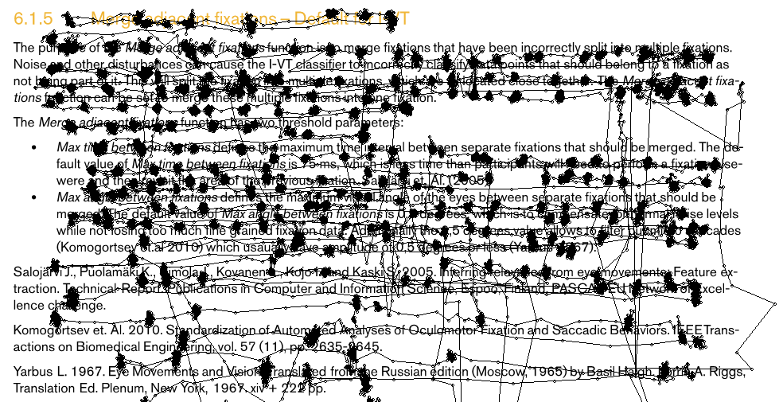
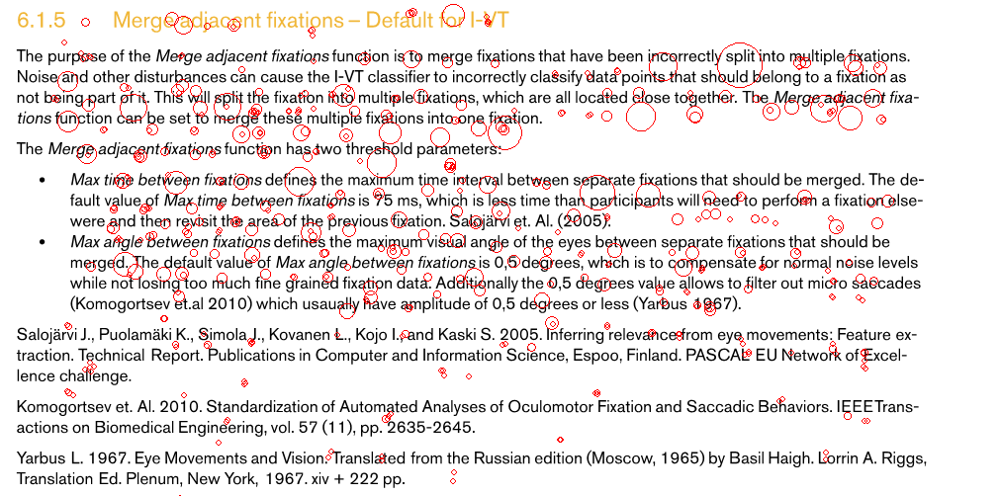
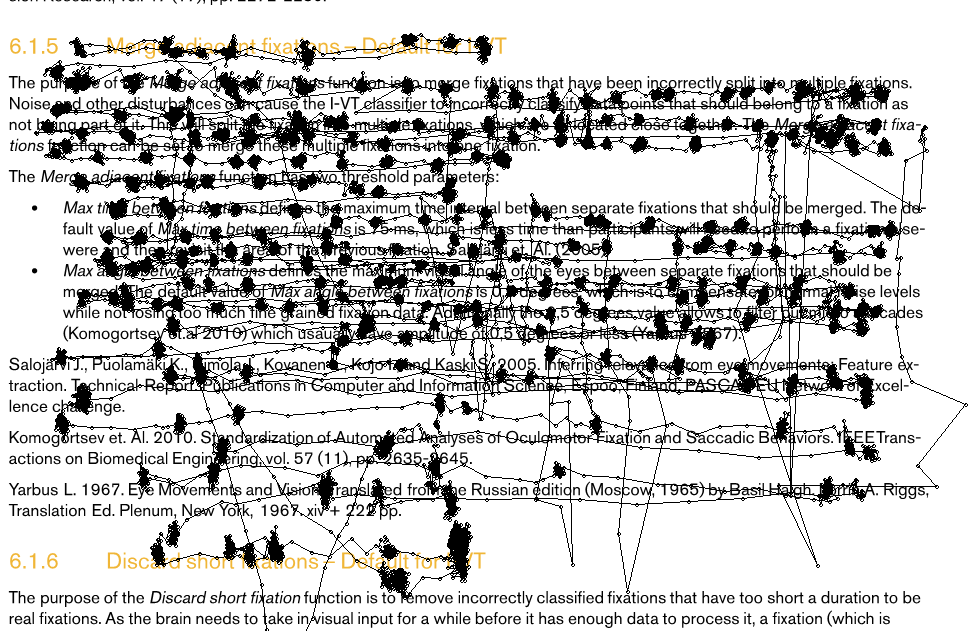
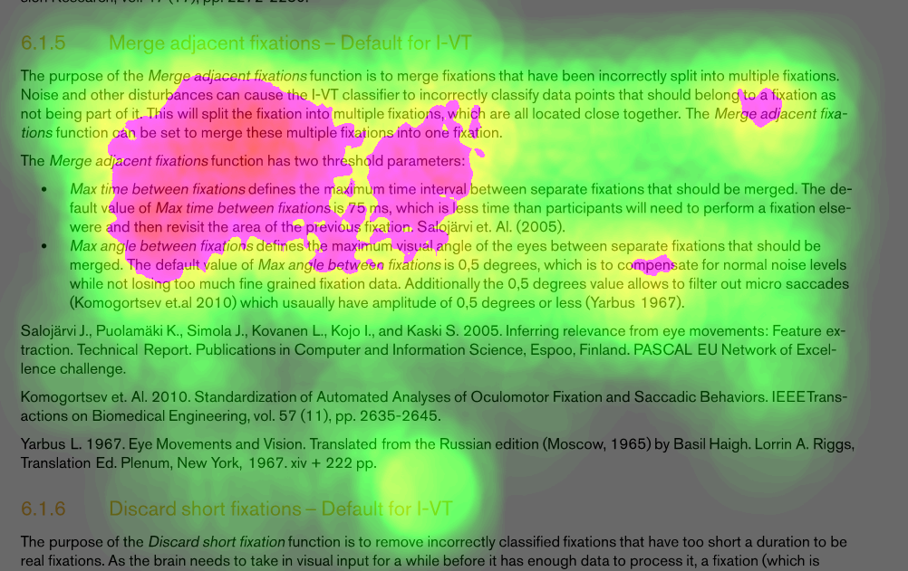

Eye tracking is known in usability and psychology studies and often used mainly in laboratories for research related to human visual system, cognitive process, and human-computer interaction. There has been no eye tracking technology that can be applied and used for smart devices, such as remote controls and smart phones in everyday life. Google glass is a possible gadget to be integrated with eye tracking cameras in the future, but it is still a long way to become reality. The reason of such slow progress is that eye tracking is suffering from slow local computation of huge data aggregation and analysis, for example, heavy computation of taking eye images, calculating gaze points, storing data, detecting fixations and saccades, and visualize data. They are preventing eye tracking analysis from online processing and pervasive usage.
Cloud computing and storage in which resources and computation tasks can be accessed, controlled, and processed through the global Internet is becoming increasingly popular. We propose a cloud computing solution to overcome slow computation and speed up analysis. We name it as EyeCloud service. We are using Hadoop and Storm frameworks to build EyeCloud and create following three applications.
Real-time heatmap rendering
"This application helps connect to local eye trackers, upload data from them to EyeCloud. On the cloud server, gaze points are aggregated to calculate heatmap intensity for each pixel of heatmap images based on Gaussian topological function. Heatmap computation is distributed on the cloud server including a master and a number of slaves. Heatmap images are returned to a client in real-time.
Based on a problem of how to aggregate and visualize gaze data from multiple eye trackers that many scenarios might require. In remote conference, for example, when we want to know participants’ point of interests in a slide show or when we want to summarize gaze data from viewers of a website. Real-time heatmap rendering is relevant for those cases. This application supports experiments with: static stimuli and dynamic stimuli."
Static stimulus heatmap rendering (Example)
| Link: | Participants: |
| Time segment: | Testing time: |
| Your experiment ID: |
Your experiment ID:
|
Youtube video heatmap rendering (Example)
| Youtube Link: | Participants: |
| Time segment: | Testing time: |
| Your experiment ID: |
Your experiment ID:
|
Note:
- Link: the address of content that you want to conduct experiment.
- Participants: number of participants of your experiment.
- Time segment: time segment of heatmap results, 500ms is recommended.
- Testing time: that is duration of your experiment.
- Link: the address of content that you want to conduct experiment.
- Participants: number of participants of your experiment.
- Time segment: time segment of heatmap results, 500ms is recommended.
- Testing time: that is duration of your experiment.
- Experiment ID: id of your current experiment.
- Participant screen: click here to open experiment screen on participants' PC.
- Online heatmap screen: click here to view online heatmaps rendered.
- Offline review: click here to review again experiments that you did.
Fixation detection
"This application provides fixation detection service in which users can upload raw gaze data and receive returned fixations. Fixation is the most important classification of eye tracking analysis and fast fixation detection improves analysis efficiency. We implemented I-VT algorithm on EyeCloud and it shows fast detection. However, the step of uploading gaze data to EyeCloud is a bottleneck because it depends on network connection speed. If the uploaded text file has a big size, the time for uploading data might be longer than detection time."
|  |  |
| Raw gaze data | Fixations |
Note: put the header of your file like below
| RecordingTimestamp | GazePointIndex | GazePointX | GazePointY | DistanceLeft | DistanceRight |
| 9 | 1 | 850 | 369 | 558.48 | 558.48 |
| 13 | 2 | 849 | 368 | 558.42 | 558.42 |
| 16 | 3 | 852 | 365 | 558.43 | 558.43 |
- Gaze data: text file of your data.
- Media file: your stimulus, e.g a image (optional).
- Upload and Detect: click here to start uploading and detecting.
- Result: a downloadable link file returned.
Offline heatmap renderinig
"This application provides heatmap offline rendering: upload text data and get returned heatmap images. It is different from the real-time heatmap rendering application that aggregates data and renders heatmap. In this application, users upload their text file containing gaze points.
Heatmap is an eye tracking visualization tool that gains insighs into what observers were looking at and how the stimulus is perceived. Heatmap rendering with Gaussian point spread function runs slowly on a local PC. EyeCloud can speed up rendering by distributed computing on a cloud cluster. EyeCloud decreases running time10~20 times faster than local PCs."
|  |  |
| Raw gaze data | Heatmap |
Note: put the header of your file like below
| RecordingTimestamp | GazePointIndex | GazePointX | GazePointY |
| 9 | 1 | 850 | 369 |
| 13 | 2 | 849 | 368 |
| 16 | 3 | 852 | 365 |
- Gaze data: text file of your data.
- Media file: your stimulus, e.g a image (compulsory).
- Upload and Render: click here to start uploading and rendering.
- Result: a downloadable link file returned.